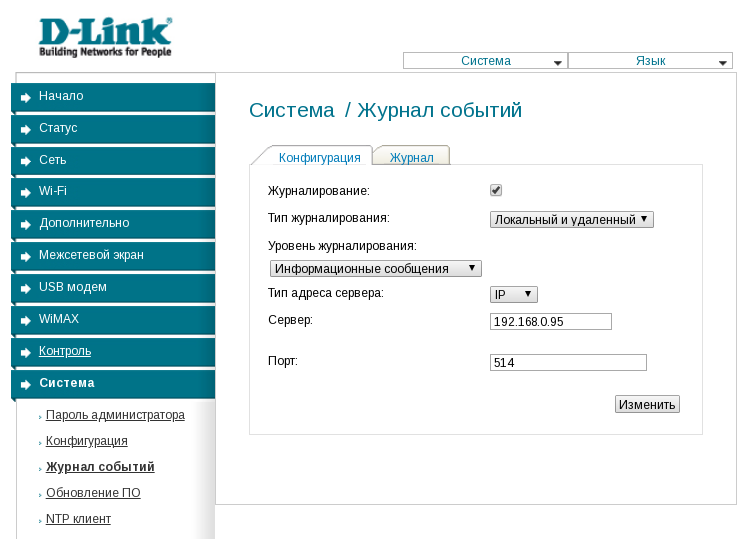
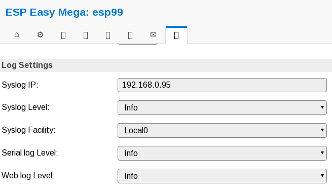

Про централизованный сбор логов
За последнее время случилось несколько событий, которые привели меня к необходимости централизованного сбора логов в своей домашней сети.
Что и зачем собирать?
- Периодически ночью отваливается интернет от билайна, хотелось бы видеть, что в этот момент происходит с роутером.
- Есть десяток IoT устройств, построенных на ESP8266, которые с прошивкой ESPEasy умеют отправлять логи по сети.
- Жена на новый год подарила управляемый гигабитный коммутатор, почему бы не снимать логи и с него, если уж будет такая возможность?
- Есть сервер умного дома, работающий на отдельной OrangePI Zero.
- Есть около полутора десятков докер и lxc контейнеров с различными службами и pet-проектами, в том числе и этот блог.
Хотелось бы хранить все эти логи в одном месте, чтобы облегчить их анализ, ротацию, архивирование и бекап. Как обрабатывать подобную информацию - это уже отдельная задача, но для начала эту информацию нужно собрать.
В каком формате собирать?
Сетевое оборудование отправляет логи в syslog формате через UDP, это стандарт де-факто для коммутаторов, роутеров, концентраторов и прочего оборудования. Прошивка ESPEasy тоже имеет возможность отправлять логи тем же образом. У докера есть директивы, позволяющие задать log-driver и в том числе есть поддержка отправки в syslog. Одним словом, выбор формата очевиден.
Чем собирать?
По долгу службы я работал со связкой fluent + elaticsearch + kibana. Для домашней сети elasticsearch и kibana на мой взгляд избыточны, да и fluent как-то тяжеловат. Как в том анекдоте - хочется чего-то лёгкого, воздушного. Посмотрел в сторону rsyslog. Между поглощением оливье и выступлением президента, попробовал завернуть на него логи c ESP, в результате получил немного фаталов и решил не пытаться бороться с этими проблемами, тем более, что функционал и синтаксис конфигов rsyslog мне пришлись не по душе. После боя курантов начал разбираться с syslog-ng и проникся. Решил завернуть это всё в контейнер с альпайном и для каждой задачи сделать по отдельному конфигурационному файлу.
Как хранить?
В случае с syslog-ng это действительно является вопросом со множеством возможных ответов. Можно отправлять логи в тот же elasticsearch, в hadoop, mongodb, kafka, в mysql или postgresql, на другой syslog сервер и, конечно же, сохранять в файлы. Самое замечательное заключается в том, что в отличие от fluent-bit, где вообще невозможно распараллелить поток логов или от fluent/td-agent, где это сделать можно, но с использованием меток (и это на мой взгляд реализовано неудобно, насколько вообще можно говорить об удобстве, когда конфигурационные файлы имеют формат XML), в syslog-ng всё красиво, логично и можно использовать один источник столько раз, сколько вам будет угодно и отправлять логи по стольки путям, сколько будет необходимо. Для начала я решил обойтись сохранением в файлы, расположенные в структуре каталогов, потом в любой момент я могу добавить отправку логов куда-нибудь ещё, в том числе параллельно.
Общий принцип работы и киллерфичи
Мы отдельно описываем источники логов, фильтры, назначения и затем командой log связываем всё это воедино. Мы так же можем использовать несколько источников, несколько фильтров и несколько назначений. Для комбинации последовательности фильтров работает бинарная логика - and, not, or.
filter demo_filter { host("example1") or host("example2"); };
Кроме фильтров между источниками и назначением так же могут быть парсеры, разбивающие данные на отдельные поля, а для формирования лога можно использовать шаблоны с использованием как вышеобозначенных полей, так и системных переменных самого syslog-ng. Дополнительную информацию об этом можно найти тут: https://wiki.archlinux.org/index.php/syslog-ng#Macros_and_Variables
Ещё мы можем отправить запись лога на stdin какой-либо программе. Тут сразу можно придумать множество полезных юзкейсов. Например, мы получаем логи с роутера, приходит запись о разрыве VPN соединения с провайдером, запись отсеивается специальным фильтром, после чего поступает на вход отдельному скрипту, который отправит мне смс с сообщением о проблеме и параллельно выставит таймер через "at now + 10 minutes" на переустановку VPN соединения.
И даже это ещё не всё. Прямо в рамках конфигурационного файла для syslog-ng можно написать отдельный кастомный парсер на python! Вот тут в документации есть пример:
https://www.syslog-ng.com/technical-documents/doc/syslog-ng-open-source-edition/3.16/release-notes/the-python-parser
Практическая реализация
Чтобы не мучать вас подробностями о том, как я шёл к решению, какие проблемы решал и чего пытался добиться, я просто выложу то, что получилось на гитхаб https://github.com/alive-corpse/es-syslog-ng. Если в общих чертах, то entrypoint докер контейнера генерирует конфигурационный файл для syslog-ng, который инклудит остальные конфигурационные файлы из директории /configs, которая подключается из директории проекта. Основые конфигурационные файлы лежат в самой директории configs, кастомные - в configs/conf.d. В принципе, там всё должно быть понятно, но тем не менее, разъясню подробнее.
Сбор логов с роутера
Сейчас я нахожусь в гостях у тёщи, поэтому в качестве proof of concept логи буду собирать с местного D-Link DIR-320. Заходим в веб интерфейс роутера, находим настройки журналирования. Абсолютно ничего сложного, просто выставляем адрес хоста, собирающего логи, указываем, что логи нужно писать и локально и на удалённую машину.

После этого наш контейнер сразу начинает получать логи. Выглядит это следующим образом:
es-syslog-ng_1 | [2019-01-02T16:40:08.429810] Incoming log entry; line='<12>Feb 27 08:17:54 kernel: [4954239.660000] MulticastFilterTableInsertEntry: already in Members list.\x0a'
es-syslog-ng_1 | [2019-01-02T16:40:08.435655] Setting value; msg='0x560369e19ce0', name='HOST_FROM', value='Dlink-Router.Dlink'
es-syslog-ng_1 | [2019-01-02T16:40:08.435759] Setting value; msg='0x560369e19ce0', name='HOST', value='Dlink-Router.Dlink'
es-syslog-ng_1 | [2019-01-02T16:40:08.435800] Setting value; msg='0x560369e19ce0', name='SOURCE', value='src_udp'
Как мы видим, можно фильтровать логи с роутера по полю HOST. Пишем несложный набор правил:
# Фильтр по интересующему нас устройству
filter f_dlink {
host("Dlink-Router.Dlink");
};
# Указываем путь сохранения в отдельную директорию, лог за каждый день - в отдельный файл,
# плюс добавляем дату и время в нужном нам формате к каждой строке лога с помощью шаблона
destination dst_dlink {
file(
"/logs/network/d-link-router/$YEAR-$MONTH-$DAY.log"
template("$ISODATE $LEVEL $MSG\n")
);
};
# Объединяем всё это
log {
# Всё, что пришло по сети
source(src_net);
# Используем наш фильтр
filter(f_dlink);
# И назначение
destination(dst_dlink);
};Сохраняем это в configs/conf.d и дёргаем релоад, для этого есть специальный скрипт:
$ scripts/reload
OK Config reload initiated
Всё намного проще, чем в td-agent. Ждём какое-то время и проверяем:
$ cat logs/network/d-link-router/2019-01-02.log 2019-01-02T17:41:01+00:00 warning [4955626.464000] MulticastFilterTableInsertEntry: already in Members list. 2019-01-02T17:43:33+00:00 warning [4955778.228000] MulticastFilterTableInsertEntry: already in Members list.
Сбор логов с ESPEasy
Всё делается примерно аналогичным образом. Тут кстати, пригодились логи, собираемые с роутера:
$ tail -f 2019-01-02.log | grep DHCPOFFER 2019-01-02T18:12:08+00:00 info DHCPOFFER(br0) 192.168.0.32 68:c6:3a:a4:85:cd
Сразу видно, что наша ESP получила адрес 192.168.0.32. Заходим в админку, идём в расширенные настройки, параметры логирования примерно аналогично.

Конфиг для syslog-ng можно посмотреть тут:
https://github.com/alive-corpse/es-syslog-ng/blob/master/configs/conf.d/espeasy.conf_example. Логи всех ESP будут сохраняться в logs/esp, имена файлов будут выглядеть так: 2019-01-02-esp99-192.168.0.32.log, где esp99 - это внутренний адрес esp, указанный в настройках, а 192.168.0.32 - соответственно, IP адрес.
$ tail -n 2 logs/esp/2019-01-02-esp99-192.168.0.32.log
2019-01-02T19:01:00+00:00 notice EspEasy: EVENT: Clock#Time=Thu,00:01
2019-01-02T19:01:08+00:00 notice EspEasy: WD : Uptime 19 ConnectFailures 0 FreeMem 12736
Сбор логов с docker контейнеров
Тут всё было несколько сложнее, пока я не заметил одну особенность - если указать для контейнера отдельный tag, то он будет воспринят сислогом как $PROGRAM. Мне хотелось сделать таким образом, чтобы у меня была директория logs/docker, внутри которой были бы поддиректории с именами контейнеров, внутри которых были бы уже ежедневные логи. В итоге я пришёл к следующему варианту - для тегов контейнеров я использую префикс 'docker-', по которому отрабатывает фильтр, а при формировании пути он вырезается из $PROGRAM при помощи substr (да-да, в конфигах есть и операторы для работы со строками, это тоже легко гуглится). Пример конфигурационного файла для syslog-ng: https://github.com/alive-corpse/es-syslog-ng/blob/master/configs/conf.d/docker.conf_example
Пример docker-compose.yml для поднятия тестового контейнера с nginx:
version: '2'
services:
nginx:
image: nginx:1.14
ports:
- "80:80"
logging:
driver: syslog
options:
syslog-address: "udp://192.168.0.95:514"
syslog-format: "rfc3164"
tag: "docker-nginx-test"
Поднимаем тестовый контейнер:
$ docker-compose up
Recreating nginx_nginx_1 ... done
Attaching to nginx_nginx_1
nginx_1 | WARNING: no logs are available with the 'syslog' log driver
Не смотря на warning, отправка логов работает. Дёргаем curl -I localhost.
$ tail -n 1 logs/docker/nginx-test/2019-01-02.log
2019-01-02T19:29:27+00:00 info 172.21.0.1 - - [02/Jan/2019:14:29:27 +0000] "HEAD / HTTP/1.1" 200 0 "-" "curl/7.52.1" "-"
Подводим итоги
На мой взгляд syslog-ng намного приятнее, удобнее в настройке и функицональнее, нежели rsyslog или fluent/td-agent, нужно только научиться его готовить. Лично я его сильно недооценивал. Чего стоит только возможность писать свои парсеры прямо в конфигурационных файлах и содзавать триггеры для скриптов по фильтрам.